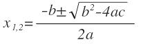

Поняття квадратного рівняння
Рівняння - це математична рівність, в якій невідома одна або кілька величин. Значення невідомих треба визначити так, щоб за їх підстановці у приклад вийшла правильна числова рівність.
Наприклад, візьмемо вираз 8 + 4 = 12. При обчисленні лівої частини виходить правильна числова рівність, тобто 12 = 12.
Рівнянням можна назвати вираз 8 + x = 12 з невідомою змінною x, значення якої потрібно знайти. Результат має бути таким, щоб знак рівності був виправданий, і ліва частина дорівнювала правою.
Ступінь рівняння можна визначити найбільшою мірою, в якій стоїть невідоме. Якщо невідоме стоїть у другому ступені, значить, таке рівняння є квадратним.
Квадратне рівняння – це ax^2+bx+c=0, де a – перший або старший коефіцієнт, не рівний нулю, b – другий коефіцієнт, c – вільний член.
Є три види квадратних рівнянь:
- не мають коренів;
- мають один корінь;
- мають два різні корені.
Поняття дискримінанта
Дискримінант квадратного рівняння - це вираз, що знаходиться під коренем у формулі знаходження коріння квадратного рівняння. Дискримінант у перекладі з латинської означає «розрізняє» і позначається буквою D.
Дискримінант - відмінний помічник, щоб зрозуміти, скільки рівняння коренів.
Властивості дискримінанта
- Якщо D<0 -коренів немає
- Якщо D=0 -є один корінь
- Якщо D>0 -є два різних корені
Найчастіше для пошуку дискримінанта використовують формулу:
D = b^2 - 4ac
Ця формула підходить навіть для неповних квадратних рівнянь.
Застосування дискримінанта
Алгоритм розв'язання квадратного рівняння ax^2+bx+c=0:
- знайти дискринінант: D=b^2−4ac;
- якщо дискримінант від'ємний - зафіксувати, що дійсних коренів немає;
- якщо дискримінант дорівнює нулю - вирахувати єдиний корінь рівняння за формулою х=-b2/2a;
- якщо дискримінант позитивний - знайти два дійсних корені квадратного рівняння за формулою коренів:
Examples:
1. Розв'язати рівняння: 3x^2–4x+2=0.
- Визначимо коефіцієнти:
a=3, b=-4, c=2.
- Знайдемо дискримінант:
D=b^2-4ac=(-4)^2-4*3*2=16-24 =-8.
Відповідь: D<0, коренів немає.
2. Розв'язати рівняння: x^2–6x+9=0.
- Визначимо коефіцієнти:
a=1, b=-6, c=9.
- Знайдемо дискримінант:
D=b^2–4ac=(-6)^2–4*1*9= 36–36=0.
- D=0, отже рівняння має один корінь:
Відповідь: корінь рівняння 3.
3. Розв'язати рівняння: x^2–4x–5=0.
- Визначимо коефіцієнти:
a=1, b=-4, c=-5.
- Знайдемо дискримінант:
D=b^2-4ac=(-4)^2-4*1*(-5)= 16+20= 36
- D>0, отже рівняння має два корені:
x1=(4+6):2=5,
x2=(4-6):2=-1.
Відповідь: два корені x1= 5, x2= -1.